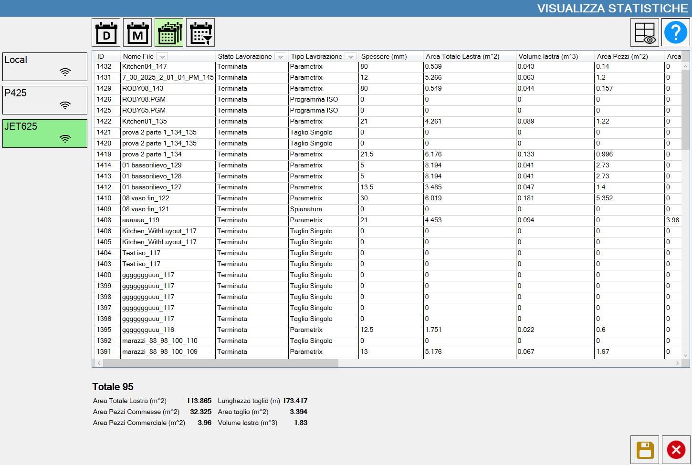
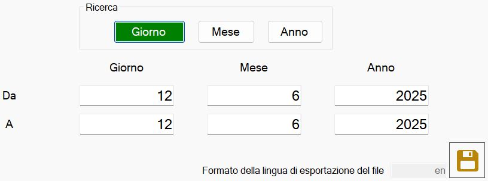

This window displays statistics for workings executed by the machine.
The statistics also include Single Cut, Pocket, Leveling and ISO execution workings.


On-screen statistics
The button at the top left provides access to the on-screen statistics window.
 | On-screen statistics |
A window opens showing information relating to workings performed on the machine.
Each item in the list corresponds to data for a single working.
At the bottom of the page, a summary of the important information for all displayed workings is provided.
Buttons
 | Daily statistics |
 | Monthly statistics |
 | Total statistics |
 | Settable time interval |
 | Columns to display |
 | Save statistics |
  | Display slab statistics |
Display piece statistics |
Statistics for each machine (Optional)
In the office-mode version of Parametrix, it is possible to connect to multiple machines and view the statistics for each one.
All machines connected to the device are displayed in the section on the left.

Research
This function searches the statistics within a user-defined time range.

The operator can enter the start and end dates to define the time range of interest.
The search precision can be defined using the buttons.
 | Search by day |
Search by month | |
 | Search by year |
To export the statistics, use the button:
| Save statistics |
Timer
This section can be used to manage the machine timers.

Using the following buttons, the operator can manually manage a timer to keep track of elapsed time.
 | Start timer |
 | Stop timer |
Reset timer |
The section on the left contains information about the operating time of the machine and the tools mounted on it.
Total Time | Indicates the total machine working time. |
Disk time | Shows the disk operating time. |
Grease
To start automatic machine greasing, use the following button:
 | Start grease cycle |